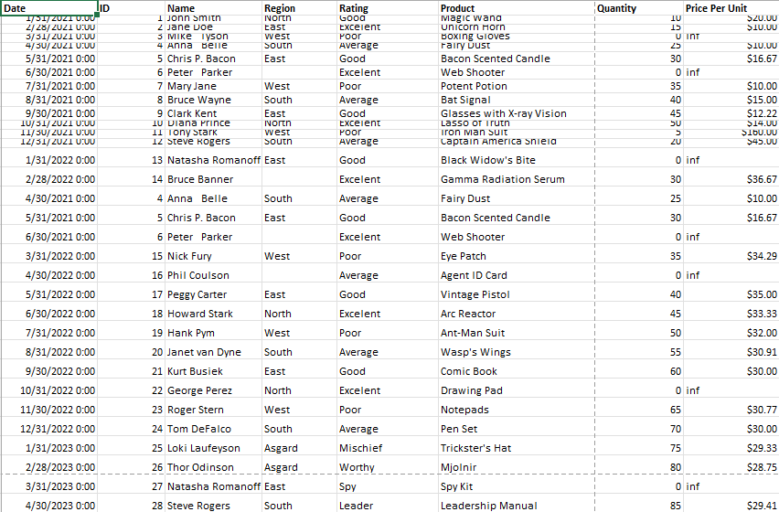
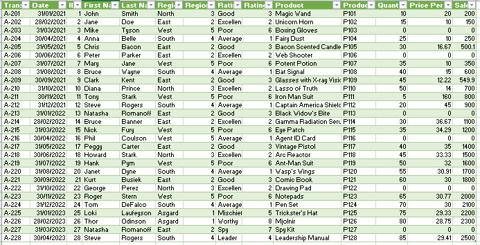
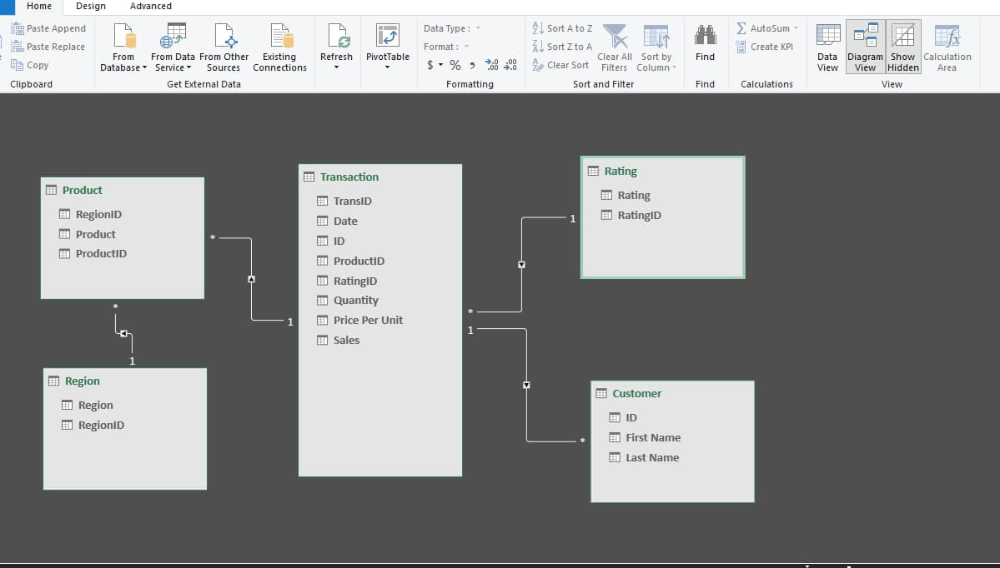

Data Cleaning Process
- Open the raw file
- Trim extra spaces
- Adjust column and row width and height for better readability
- Create a TransID and ID, then drag down to generate sequential numbers
- Separate Customer Name into First Name and Last Name
- Assign an ID to those who need an ID
- Remove NULL values
Normalization
- Create a NEW sheet for normalization
- Categorize data into separate groups (e.g., Rating)
- Identify fields that need normalization (e.g., Rating) and assign numerical values (e.g., 1, 2, 3, 4)
- Remove duplicates and sort the data
- Copy the normalized values back into the original data
- Drag down to apply the changes based on the new normalized sheet
Before Data Cleaning

After Data Cleaning

Physical Data Model
